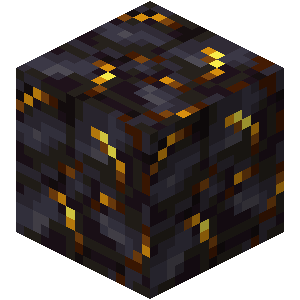
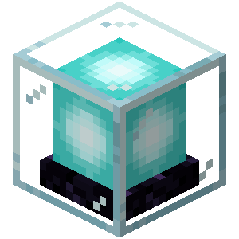
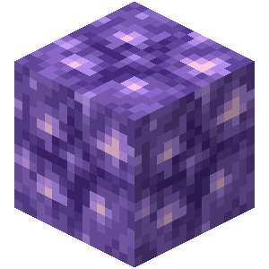

Gilded Blackstone
Beacon
Netherite Block

Emerald Ore

Bedrock (there is a glitch)

Budding Amethyst
Emerald Block
First, I'm going to eliminate emerald block, because you can trade with villagers to get it very quickly
That leaves Netherite block, Emerald Ore, Bedrock, Budding Amethyst, Beacon, And Gilded Blackstone
While it is very difficult to obtain in survival, only members of scicraft know how to do the glitch. And bedrock is under no circumstances hard to find.